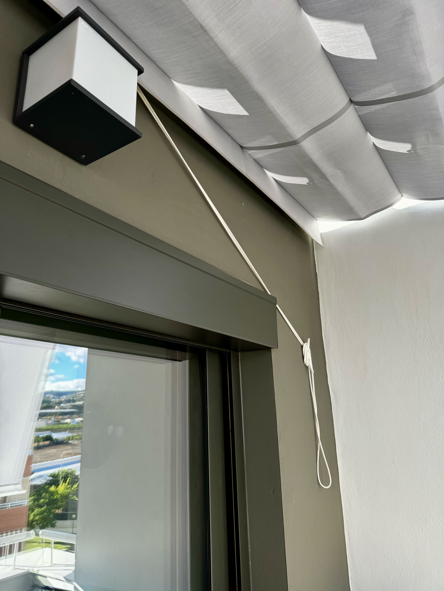
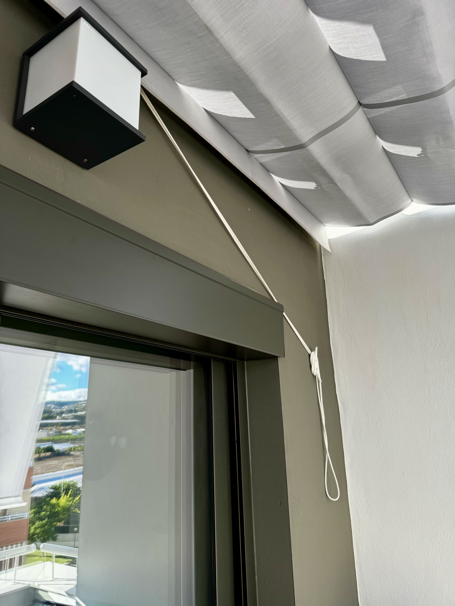

Hola! Vítejte na Pavlové stránce Algarrobo Costa.
Na této stránce najdete všechny potřebné informace ohledně ubytování a také zajímavé tipy na restaurace či výlety.
Adresa
Parkovací stání
Parkovací stání má číslo 82, a je v pravé zadní sekci parkoviště v řadě VLEVO. Otevření vrat vjezdu do areálu je dálkovým ovladačem na klíčích od bytu (brána se zavře sama pro projetí, není třeba zavírat).
Vybavení bytu
Byt je plně vybaven a veškeré vybavení a materiál je vám plně k dispozici.
- povlečení a ručníky (domácí i plážové) jsou buď na postelích, věšáku, nebo ve skříni v pravé ložnici (podle potřeby je si je prosím vyžehlete – pokud zůstaly vyprány a usušeny na věšáku návštěvníky před vámi)
- žehlicí prkno a sušák je na boku lednice v kuchyni
- pračka se nachází v kuchyni vlevo vedle elektrického bojleru, před použitím je třeba pustit vodu (za pračkou je ventil, přívod vody do pračky je ten VPRAVO). Po každém vyprání prosím přívod vody zase uzavřete. NIKDY NEOTVÍREJTE PŘÍVOD VODY VLEVO – NENÍ NAPOJEN A VODA BY TEKLA PŘÍMO NA PODLAHU
- ve horních skříňkách je čaj, káva, cukr, dochucovadla, v lednici voda, cola, pivo - vše v kuchyni je vám k dispozci
- v mrazáku je vždy bageta, nebo chleba pro případ nenadálého hladu například při pozdním příjezdu
Klimatizace
- v bytě je instalována klimatizace, která je vyvedena do obou ložnic a obývacího pokoje (nelze regulovat, v jakých místnostech je klimatizováno)
- ovládání je přes panel umístěný na levé stěně v obýváku, klimatizaci zapnete tlačítkem on/ off a následně šipkami nahoru a dolů volíte teplotu a intenzitu větrání
Sonos
- reproduktor SONOS, zapnete hlavním vypínačem a podržením tlačítka Bluetooth připojení jej připojíte ke svému mobilnímu telefonu (název zařízení, který se objeví ve bluetooth je HORNÍ KOUPELNA)

Wifi
- Zatím bohužel není k dispozici, lze však využít váš datový roaming v rámci EU, signál je všude a data fungují. Případně ve všech restauracích v okolí je WIFI, a obsluha vám ho ráda poskytne.
Markýza na balkoně a rolety
- Na balkoně je k dispozici přední a horní markýza. Přední markýza se ovládá tyčí, která se prostrčí v očku v pravém horním rohu a mechanicky se spustí. Pak je třeba markýzu zajistit pomocí úchytů, které jsou v každém rohu (možné dvě polohy - plně spuštěná a částečné spuštěná). Horní markýza se spouští pomocí provazu za který se zatáhne a poté se zajistí na háček na stěně. K dispzici jsou také rolety v obou ložnicích, které se ovládají manuálně. Roleta v obývacím pokoji je elektrická, ovládání v pravo u vstupu na balkon.

 

Při příjezdu
Nahoďte elektrické pojistky – je možno nahodit všechny, které byly shozené (necháváme pouze v chodu lednici, ostatní prosím shoďte při odjezdu). Skříň s pojistkami se nachází vlevo vedle vstupu do bytu za bílými dvířky.

Zapojte bojler na teplou vodu – nachází se v kuchyni za dvoukřídlými dveřmi vlevo vedle pračky. Boiler prosím zapojute do zásuvky vpravo na zdi.
Pokud by zapáchala teplá voda, odpusťte teplou vodu (voda může zapáchat, pokud byl byt delší dobu neobýván, nebo nebyla vypuštěna horká voda při minulém pobytu). Při odjezdu zcela vypusťte teplou vodu z bojleru – ideální je vypnou bojler noc před odjezdem a vypustit zbytek).
Pravidla domu
Prosím, dodržujte noční klid od 22:00 do 7:00.
V bytě PROSÍM nekuřte. Pokud chcete kouřit, prosím využijte prostor před domem, a nedopalky odstraňte.
Venkovní bazén
Je v provozu od 1.4. do 31.10. daného roku. Bazén je plně k dispozici v čase od 10.00 – 22.00 hodin.
Před odjezdem
Koupelny/WC
- prosím ukliďte byt před vaším odjezdem, aby další návštěvníci našli byl čistý a uklizený
- umyjte koupelny a wc
Obývací pokoj/ložnice
- vyluxujte místnosti, případně vytřete podlahu
- sundejte povlečení a vyperte ho spolu s utěrkami a ručníky, nechte ho sušit na sušáku uvnitř
Kuchyně
- vyhoďte nezkonzumované a netrvanlivé věci z lednice, vysypte odpadkový koš
- umyjte nádobí, a vraťte ho na místo, ideálně vyndejte nádobí z myčky, pokud máte možnost
Balkon
- vytáhněte na balkoně markýzu
- židličky složte a opřete o stěnu vpravo
- podsedáky ze židliček dejte dovnitř
- stáhněte a zajistěte venkovní markýzu
POPELNICE JSOU UMÍSTĚNY NA ULICI PŘED AREÁLEM VPRAVO JE SMĚSNÝ ODPAD A VLEVO BLÍŽE K PLÁŽI JSOU BAREVNÉ POPELNICE NA TŘÍDĚNÝ ODPAD.
DŮLEŽITÉ
- SPUSŤTE / ZATÁHNĚTE VENKOVNÍ ROLETY V OBOU LOŽNICÍCH I OBÝVACÍM POKOJI.
- Před odchodem prosím zkontrolujte, že všechna okna jsou zavřená a dveře zamčené.
- ZKONTROLUJTE ZDA JE ZAVŘENÝ VODOVODNÍ VENTIL U PRAČKY A VŠECHNY VODOVODNÍ BATERIE JSOU ZAVŘENÉ (VODU NEVYPÍNEJTE).
Krásný pobyt!
Restaurace
Algarrob - Steakhaus:
Algarrobo - Seafood a grill:
Algarrobo hory - Typická španělská restaurace:
Ronda - Tapas bar:
Ronda - Sea food lokální:
Potraviny
Mercadona:
Lidl:
Nákupní centra
El Ingenio:
Nejbližší okolí:
Nerja:
Frigiliana:
Cómpeta:
Celodenní výlety:
Caminito Del Rey:
Je nutná rezervace předem: odkaz zde.
Granada - komplex Alhambra:
Je taktéž nutná rezervace předem: odkaz zde.
Poplatky spojené s provozem bytu
Poplatky spojené s provozem bytu - elektřina, voda, služby v domě plus provoz auta činí 800 CZK na den pobytu.
Kalendář rezervací
Kalendář může upravovat pouze Pavel. Pro vytvoření rezervace tedy prosím kontaktujte jeho.